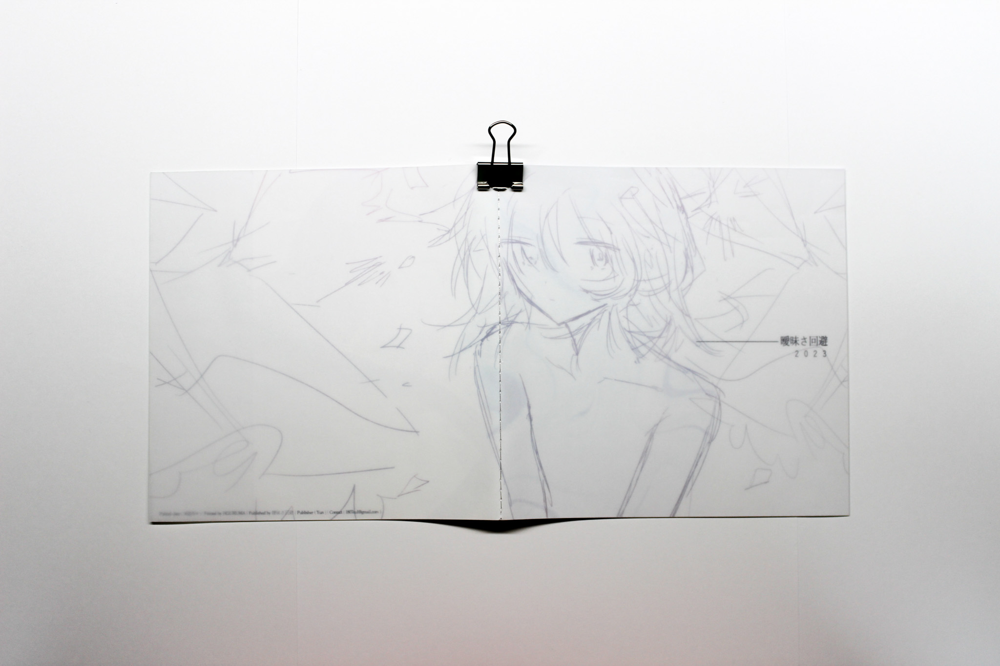
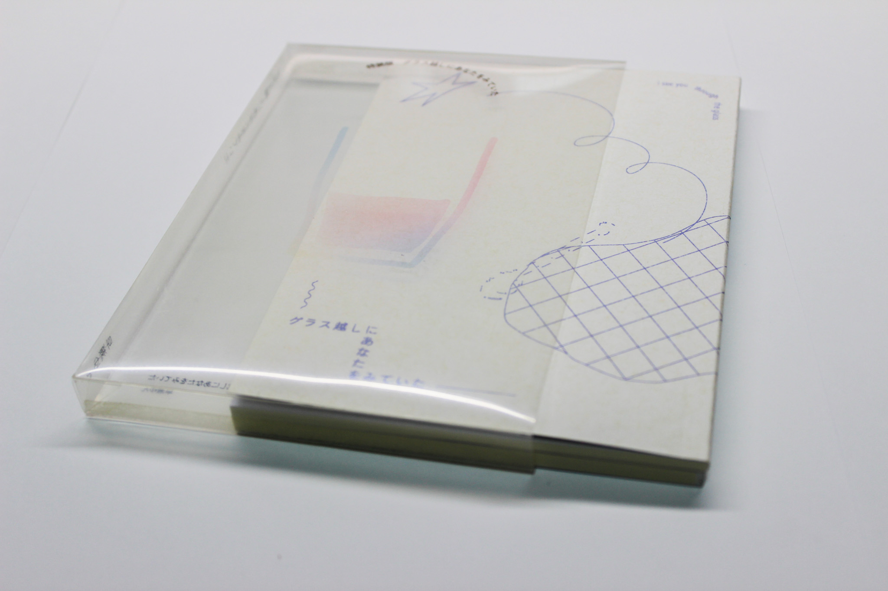
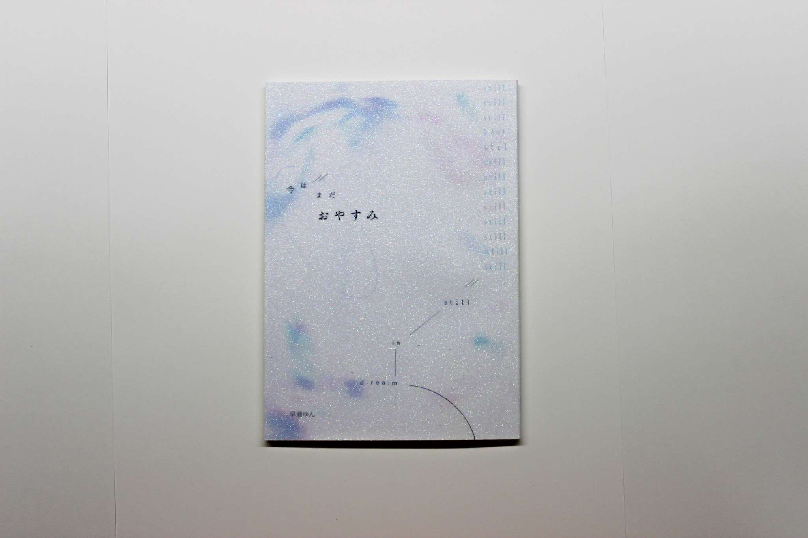

WORKS
TOP
ABOUT
WORKS
ARCHIVES
CONTACT
Graphic
|
Direction
|
Editorial
|
Illustration
|
Movie

曖昧さ回避（イラスト集）
自主制作
/ 2023
好きな形容詞からインスピレーションをもらったイラストだけで
構成したイラスト集。
ミシン綴じに加え、表紙にトレペを使用することでカーテンのような
表現を追求しました。
-
本文：Cotton スノーホワイト 116.3g
表紙：トレーシング 135g

グラス越しにあなたをみていた（詩集） /
ABENSHEE SPECIAL PRODUCT
/ 2024
過去の詩集の再録の1冊と、新作詩集の2冊をクリアケースに入れた構成。
本を入れることでケースに印刷されているグラスが浮き出るようにしています。
-
頒布：武蔵野美術大学 芸術祭 - 2024

今はまだおやすみ（詩集）
自主制作 / 2024
文学フリマに向けて制作した詩集。テーマとタイトルに合わせ、
特殊な紙を使用しています。
-
表紙：グリッターオーロラペーパー
頒布：文学フリマ